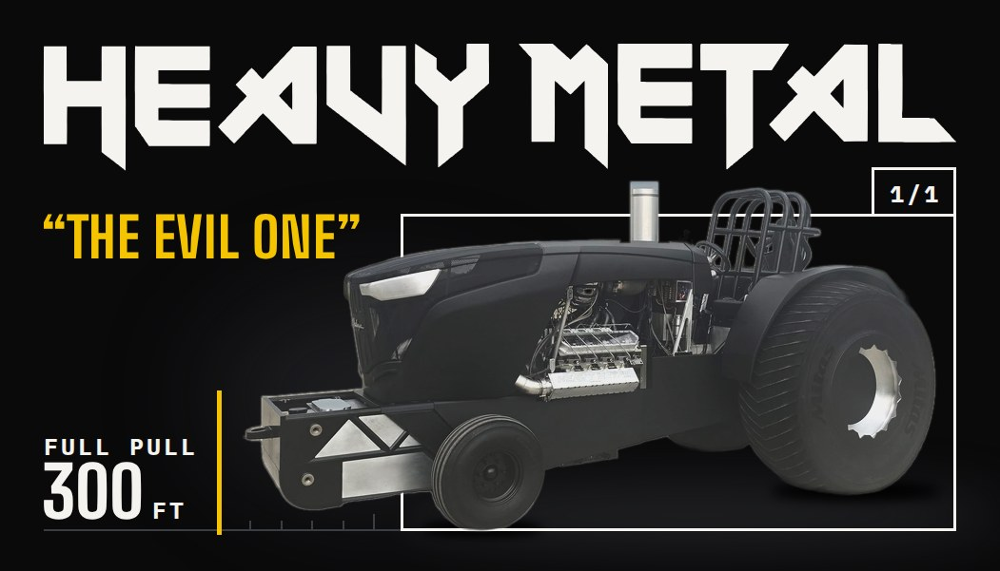
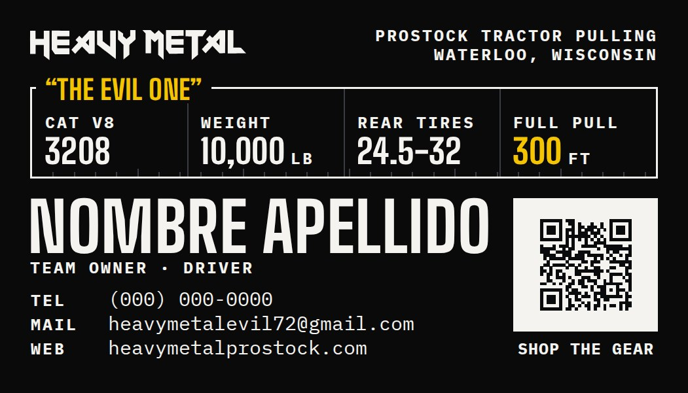
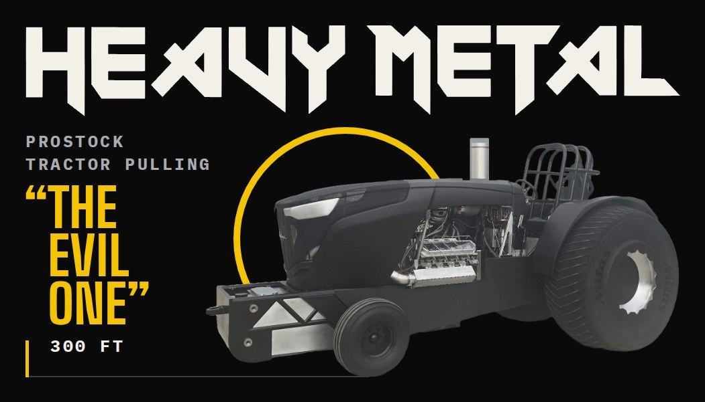
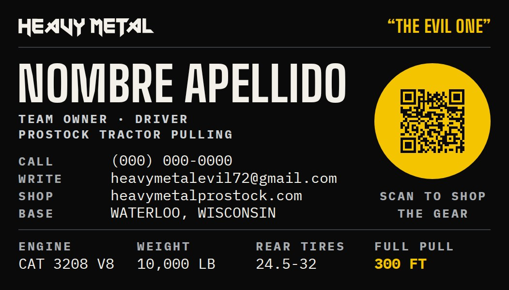
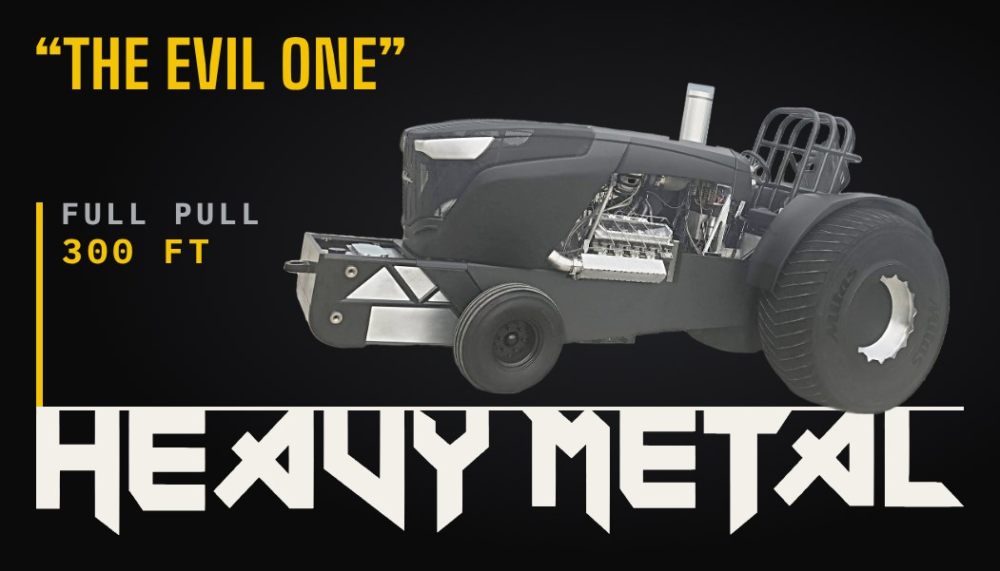
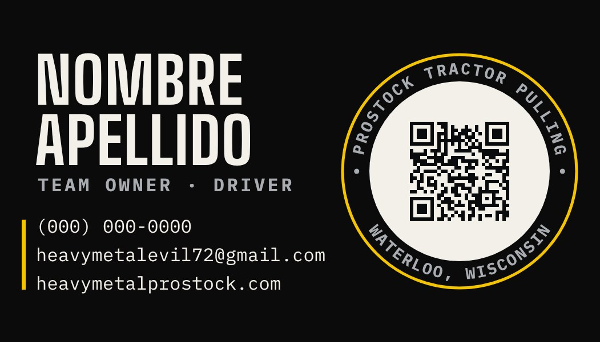

Heavy Metal · “The Evil One” · Tarjetas de presentación
Tres direcciones para la tarjeta
Tres diseñadores trabajaron en paralelo y un consejo de tres jueces los calificó en cada ronda: director creativo, experto en imprenta y curador de diseño. Esta es la ronda 3, la más reciente. La meta que fijamos es 27 de 30. Ninguna llegó todavía: van cerca de 23. Abajo está lo que falta en cada una.
Meta del consejo
27de 30
Mejor puntaje hasta ahora
23.4“Album”, ronda 2
Rondas
39 diseños, 27 evaluaciones
A · Collectible 1/1
Recomendada
La tarjeta como una tarjeta coleccionable de edición única. En el frente, un marco de tarjeta dentro de la tarjeta, y el tractor es tan grande que se sale del marco rumbo al poste amarillo de 300 FT. En el reverso, las estadísticas de la máquina como en una tarjeta de colección, junto con los datos y el QR.

Frente

Reverso
Lo que funciona
La idea más compartible: una tarjeta que colecciona el fan.
“HEAVY METAL” grande y el tractor completo.
El reverso con estadísticas reales es el más útil para patrocinadores.
Lo que el consejo pide
Que el marco se lea claramente como tarjeta.
Más separación entre el tractor negro y el fondo, para que no se pierda en la imprenta.
R1 20.2R2 22.3
B · Album cover
Mejor puntaje
Heavy Metal tomado al pie de la letra: la tarjeta como portada de un disco legendario. El logo como nombre de la banda a todo lo ancho, el tractor como monumento y “The Evil One” como el título del disco, en amarillo. En el reverso, los datos ordenados como las notas de un disco.

Frente

Reverso
Lo que funciona
El logo más grande y claro de las tres.
Jerarquía limpia y el QR en amarillo, fácil de encontrar.
Obtuvo el puntaje más alto del consejo.
Lo que el consejo pide
Que el círculo amarillo se entienda como disco y no como un aro decorativo.
Que la llanta trasera no quede tan pegada al borde de corte.
R1 22.4R2 23.4
C · Iconic
Más sobria
Una imagen y una palabra. El nombre es la pista: el tractor sube la cuesta encima de “HEAVY METAL” en blanco. En el reverso, el nombre grande y el QR dentro del aro amarillo de la foto de perfil, así la tarjeta y el perfil de Facebook son de la misma familia.

Frente

Reverso
Lo que funciona
El reverso con el aro del perfil de Facebook une toda la marca.
La más elegante y fácil de producir.
Lo que el consejo pide
Que la línea sobre el logo no pegue las letras entre sí.
Más luz en el tractor para que no se empaste en la imprenta.
R1 22.8R2 22.4
Siguiente paso
Elegir una dirección. Mi recomendación es A, Collectible, por ser la más distinta y la más compartible.
Una ronda enfocada en esa sola opción con los tres jueces, hasta llegar a 27.
Datos reales: nombre, teléfono y cargo, para dejar el PDF listo para imprenta.